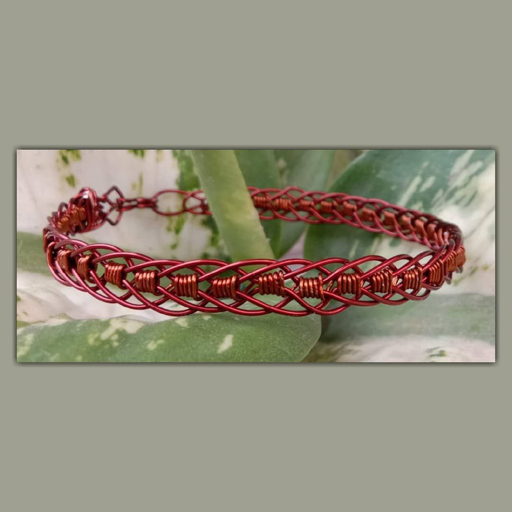
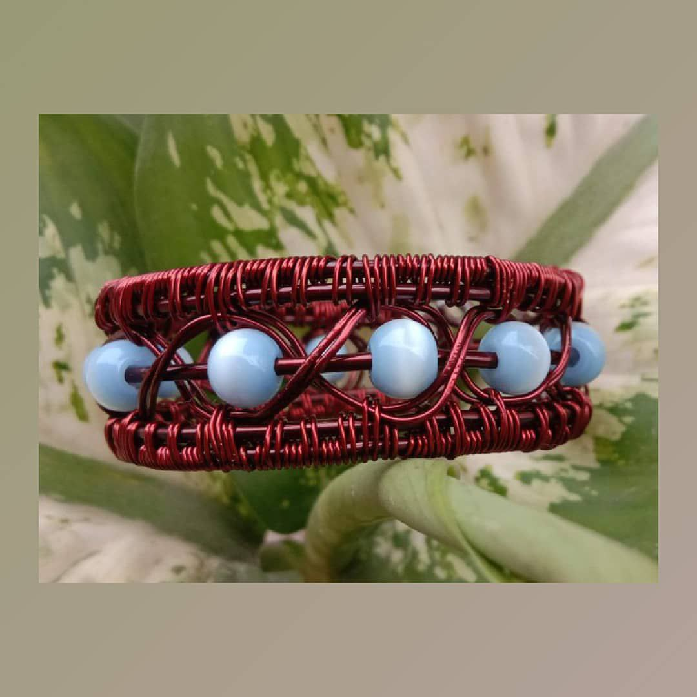

2022
Handmade
jewellery Accessories
Modern & stylish Jewellery 💍
Handmade jewellery is literally just that, made by the “hands” of the artisan or maker.Jewellery has always been essential to people who loves to accessorize.Handmade jewellery can be made using any materials and techniques provided they are manually done.
Shop Now

